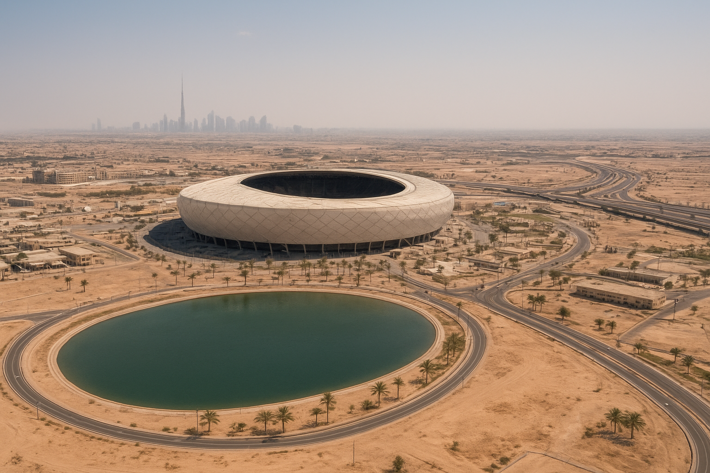

Olympia 2036: Interne IOC-Daten zeigen Wasserverbrauch auf Vorkrisenniveau
Riad / Neom · 18. Juli 2035
Ein Jahr vor Beginn der Olympischen Spiele 2036 in Saudi-Arabien liegt der tägliche Wasserverbrauch der olympischen Zonen laut internen Dokumenten bei dem 2,7-Fachen der ursprünglich genehmigten Obergrenze.
Die Daten stammen aus einem gemeinsamen Monitoring-System von IOC, saudischem Sportministerium und privaten Infrastrukturpartnern. Besonders betroffen sind die gekühlten Open-Air-Arenen, temporäre Athletendörfer sowie der neu geschaffene „Visitor Corridor“ zwischen Riad und Neom.
Während die Organisatoren von recyceltem Prozesswasser sprechen, zeigen die Protokolle: Bis zu 41 Prozent des Bedarfs wird weiterhin durch energieintensive Entsalzung gedeckt.
• Wasserverbrauch: +170 % ggü. Genehmigung
• Entsalzungsanteil: 41 %
• Gekürzte Zivilquoten: bis zu −18 %
• Nachhaltigkeitsrating (intern): B–
Gleichzeitig wurden in drei angrenzenden Regionen zivile Wasserquoten um bis zu 18 Prozent gesenkt. Offiziell bestehe kein Zusammenhang mit den Spielen. Interne Verwaltungsvermerke sprechen jedoch von „priorisierter nationaler Sichtbarkeit“.
Spiele der Quoten
Kritiker sehen in den Spielen einen Präzedenzfall. Olympische Sonderzonen sind vom nationalen Ressourcen-Scoring ausgenommen – für die Bevölkerung gelten diese Ausnahmen nicht.